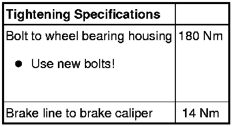

17" (1KQ) Caliper
Brake Caliper
Special tools, testers and auxiliary items required
• Torque wrench (VAG 1332)
• Socket XZN 16 (T10198)
• Brake pedal actuator (VAG 1869/2)
Removing
Work procedure applies only for replacing or when performing subsequent service work on brake caliper.
- Remove wheels and tires.
- Connect bleeder hose of bleeder bottle to bleeder valve of brake caliper and then open bleeder valve.
- Insert brake pedal depressor (VAG 1869/2).
- Close bleeder valve and remove bleeder bottle.
- Remove brake line from brake caliper.
- Remove brake pads. Refer to --> [ Brake Pads ] Brake Pads.
- Remove wheel speed sensor wire out of bracket at brake caliper.
- Remove brake caliper from wheel bearing housing.
Installing
- Install brake caliper onto wheel bearing housing.
- Install brake pads. Refer to --> [ Brake Pads ] Brake Pads.
- Install brake line on brake caliper.
- Press wheel speed sensor wire into bracket at brake caliper.
- Remove brake pedal loading device (VAG 1869/2).
- Bleed the brake system. Refer to --> [ Brake System Bleeding General Information ] Brake System Bleeding General Information.
- Install wheels and tires.
Tightening specification for wheel bolts.
• Before moving vehicle, press brake pedal several times firmly to properly seat brake pads in their normal operating position.
• Check brake fluid level.
